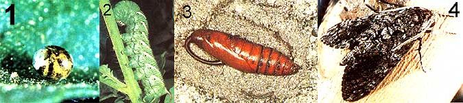

[1]Hornworms can first be detected in the form of small yellow eggs deposited on host plants. This particular egg displays a dark coloration indicating that it has been parasitized and would therefore pose no threat to your garden later. [2] From a healthy egg, a hornworm develops into a large cat erpillar, and it's during this stage that the varmints do the most damage to tomato bushes and other solanaceous plants! [3] When fully grown, the caterpillar will burrow down into the ground to pupate . . . [4] and finally, it'll emerge as the harmless fuzzy sphinx moth so often seen fluttering at porch lights on summer evenings.